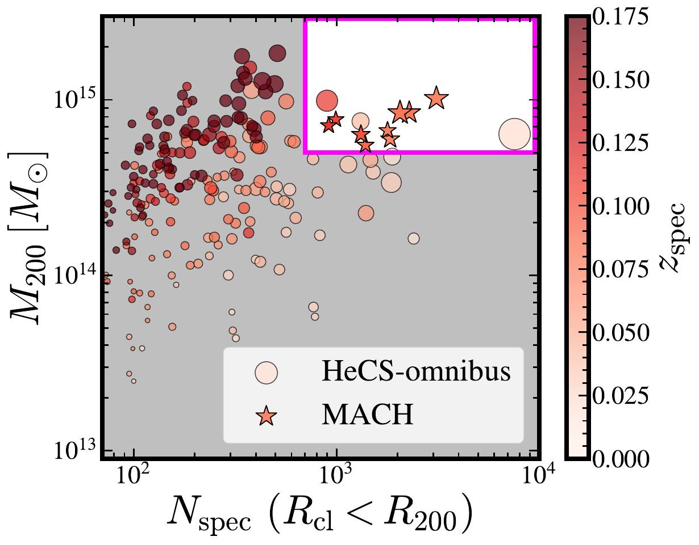
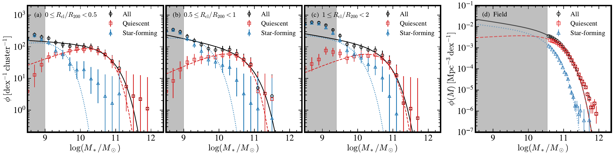
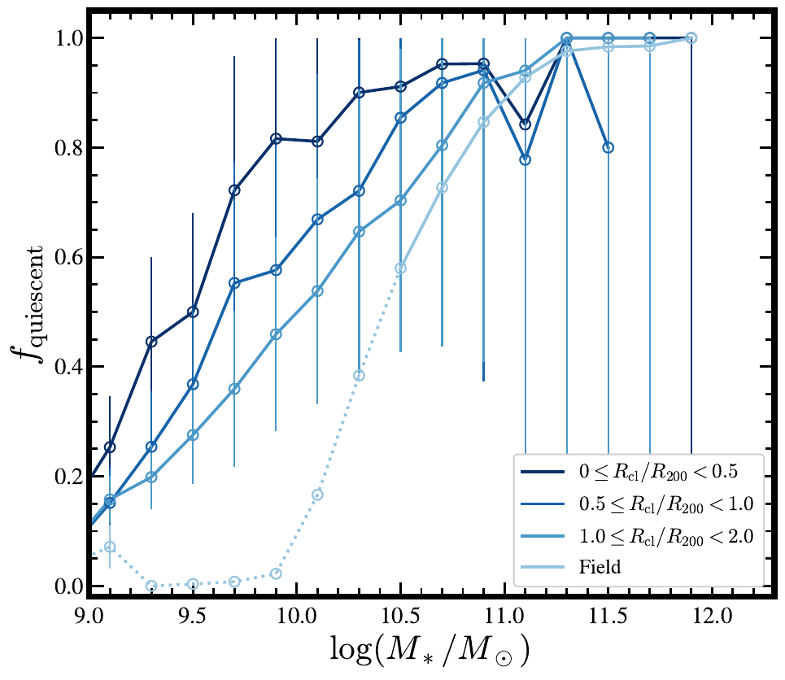

HeCS-omnibus / A deeper subset
Deep, dense and complete spectroscopy of the nine most massive galaxy clusters in the local universe.
The MAssive Cluster survey with Hectospec selects the most massive, best-sampled clusters in HeCS-omnibus at 0.07 < z < 0.11 — a redshift window chosen so that R200 fits inside the one-degree Hectospec field.
Overview
Between 2017 and 2023 we obtained 41,897 unique Hectospec spectra in the nine MACH fields, targeting every galaxy brighter than r = 21.3 with no color selection at all. Adding SDSS and DESI redshifts brings the total to tens of thousands of measured velocities per field.
The result is a sample that is spectroscopically complete to r ≈ 20.1–21.1 within each cluster, with 400–1,400 caustic members per system and stellar mass functions reaching log(M*/M☉) ≈ 8.5 — roughly two dex deeper than SDSS over the same volume.

Why it matters
Sample
| Cluster | z | Nspec | Nspec(<R200) | Nmem | Nmem(<R200) | R200 (Mpc) | log M200 | rcomp |
|---|---|---|---|---|---|---|---|---|
| A2245 | 0.088 | 39,270 | 1,390 | 548 | 312 | 1.65 | 14.74 | 20.9 |
| A1767 | 0.071 | 13,394 | 1,840 | 668 | 377 | 1.70 | 14.78 | 20.9 |
| A2244 | 0.099 | 39,129 | 1,319 | 748 | 364 | 1.72 | 14.80 | 20.9 |
| A1831 | 0.075 | 18,466 | 1,785 | 520 | 313 | 1.76 | 14.82 | 20.1 |
| A2034 | 0.113 | 37,944 | 915 | 410 | 287 | 1.78 | 14.85 | 20.6 |
| A7 | 0.103 | 13,463 | 992 | 436 | 281 | 1.83 | 14.89 | 20.9 |
| A2255 | 0.080 | 11,944 | 2,057 | 1,099 | 618 | 1.90 | 14.93 | 20.6 |
| A2029 | 0.079 | 34,829 | 2,235 | 1,377 | 538 | 1.90 | 14.93 | 20.6 |
| A2065 | 0.073 | 25,159 | 3,109 | 1,099 | 609 | 2.03 | 15.01 | 21.1 |
Ordered by M200. Nspec counts all galaxies with redshifts in the field; Nmem are caustic members. rcomp is the magnitude at which cumulative spectroscopic completeness drops below 90%. Tables 1 and 2 of Park et al. (2026).
Three clusters inside the same region of the mass–sampling plane are not in MACH: Coma (z = 0.023), A119 (z = 0.044) and A2069 (z = 0.114) fall outside the survey redshift window.
Results
Between log M* = 10.5 and 11.4 the cluster stellar mass function has the same shape as the field but twice the amplitude. Above 11.4 the clusters show a clear excess of massive galaxies, including the BCGs.
Quiescent galaxies follow a curved mass function peaking near log M* ≈ 10.5; star-forming galaxies rise monotonically toward low mass. In the cluster core the quiescent peak shifts to lower mass.
The quiescent fraction rises toward the cluster center at every stellar mass, and most steeply for low-mass galaxies.
Simulated clusters of the same mass match the observed mass function at 10.5–11.4, but host too-massive BCGs and about half as many galaxies at log M* = 9–10.5.


Data & citation
MACH catalogs are distributed together with the HeCS-omnibus data release.
Earlier deep Hectospec work on individual MACH clusters — notably A2029 with about 1,200 spectroscopic members — is described in Sohn et al. (2017, 2019).